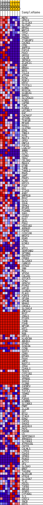
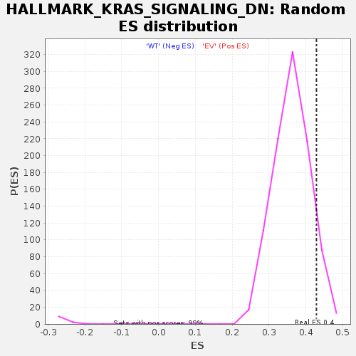

| | | Dataset | EV_WT_express.EV_WT.cls#EV_versus_WT |
| Phenotype | EV_WT.cls#EV_versus_WT |
| Upregulated in class | EV |
| GeneSet | HALLMARK_KRAS_SIGNALING_DN |
| Enrichment Score (ES) | 0.42867294 |
| Normalized Enrichment Score (NES) | 1.1855228 |
| Nominal p-value | 0.0859454 |
| FDR q-value | 0.31303775 |
| FWER p-Value | 0.996 |
Table: GSEA Results Summary
 Fig 1: Enrichment plot: HALLMARK_KRAS_SIGNALING_DN
Fig 1: Enrichment plot: HALLMARK_KRAS_SIGNALING_DN
Profile of the Running ES Score & Positions of GeneSet Members on the Rank Ordered List
| SYMBOL | TITLE | RANK IN GENE LIST | RANK METRIC SCORE | RUNNING ES | CORE ENRICHMENT | | 1 | MEFV | NNN | 7 | 2.599 | 0.0427 | Yes |
| 2 | GPR19 | NNN | 123 | 1.340 | 0.0629 | Yes |
| 3 | SLC12A3 | NNN | 211 | 1.218 | 0.0815 | Yes |
| 4 | SLC5A5 | NNN | 833 | 0.904 | 0.0858 | Yes |
| 5 | NPHS1 | NNN | 941 | 0.862 | 0.0982 | Yes |
| 6 | WNT16 | NNN | 1058 | 0.834 | 0.1099 | Yes |
| 7 | TFF2 | NNN | 1142 | 0.814 | 0.1220 | Yes |
| 8 | YPEL1 | NNN | 1174 | 0.806 | 0.1347 | Yes |
| 9 | PRODH | NNN | 1619 | 0.735 | 0.1393 | Yes |
| 10 | ITGB1BP2 | NNN | 1713 | 0.718 | 0.1495 | Yes |
| 11 | CACNG1 | NNN | 1921 | 0.688 | 0.1573 | Yes |
| 12 | CPB1 | NNN | 2110 | 0.660 | 0.1650 | Yes |
| 13 | ARPP21 | NNN | 2258 | 0.648 | 0.1732 | Yes |
| 14 | FGF16 | NNN | 2331 | 0.648 | 0.1826 | Yes |
| 15 | PAX3 | NNN | 2532 | 0.643 | 0.1898 | Yes |
| 16 | GRID2 | NNN | 2552 | 0.643 | 0.2001 | Yes |
| 17 | CALCB | NNN | 2643 | 0.643 | 0.2092 | Yes |
| 18 | ZBTB16 | NNN | 2656 | 0.643 | 0.2196 | Yes |
| 19 | ZC2HC1C | NNN | 2850 | 0.632 | 0.2267 | Yes |
| 20 | GDNF | NNN | 2900 | 0.627 | 0.2362 | Yes |
| 21 | NR6A1 | NNN | 2903 | 0.627 | 0.2465 | Yes |
| 22 | NOS1 | NNN | 3492 | 0.581 | 0.2461 | Yes |
| 23 | TCL1A | NNN | 3531 | 0.577 | 0.2549 | Yes |
| 24 | ATP4A | NNN | 3725 | 0.564 | 0.2609 | Yes |
| 25 | RYR2 | NNN | 3989 | 0.543 | 0.2654 | Yes |
| 26 | RIBC2 | NNN | 4127 | 0.532 | 0.2718 | Yes |
| 27 | KRT4 | NNN | 4344 | 0.514 | 0.2766 | Yes |
| 28 | TFCP2L1 | NNN | 4354 | 0.513 | 0.2849 | Yes |
| 29 | KCNN1 | NNN | 4418 | 0.507 | 0.2922 | Yes |
| 30 | MYO15A | NNN | 4472 | 0.503 | 0.2996 | Yes |
| 31 | SCGB1A1 | NNN | 4545 | 0.500 | 0.3066 | Yes |
| 32 | BARD1 | NNN | 4724 | 0.491 | 0.3117 | Yes |
| 33 | SLC25A23 | NNN | 5110 | 0.467 | 0.3128 | Yes |
| 34 | KCND1 | NNN | 5131 | 0.466 | 0.3202 | Yes |
| 35 | CAPN9 | NNN | 5272 | 0.461 | 0.3254 | Yes |
| 36 | TGM1 | NNN | 5307 | 0.458 | 0.3324 | Yes |
| 37 | KCNQ2 | NNN | 5327 | 0.457 | 0.3396 | Yes |
| 38 | UGT2B17 | NNN | 5391 | 0.455 | 0.3460 | Yes |
| 39 | EGF | NNN | 5394 | 0.455 | 0.3535 | Yes |
| 40 | CACNA1F | NNN | 6098 | 0.438 | 0.3487 | Yes |
| 41 | IFI44L | NNN | 6170 | 0.434 | 0.3546 | Yes |
| 42 | TFAP2B | NNN | 6176 | 0.434 | 0.3617 | Yes |
| 43 | MFSD6 | NNN | 6247 | 0.432 | 0.3676 | Yes |
| 44 | RGS11 | NNN | 6249 | 0.432 | 0.3747 | Yes |
| 45 | CLSTN3 | NNN | 6259 | 0.431 | 0.3817 | Yes |
| 46 | EDN1 | NNN | 6320 | 0.428 | 0.3877 | Yes |
| 47 | TNNI3 | NNN | 6322 | 0.428 | 0.3947 | Yes |
| 48 | RYR1 | NNN | 7435 | 0.411 | 0.3825 | Yes |
| 49 | MAST3 | NNN | 8063 | 0.385 | 0.3782 | Yes |
| 50 | GPR3 | NNN | 8192 | 0.379 | 0.3823 | Yes |
| 51 | HNF1A | NNN | 8202 | 0.378 | 0.3883 | Yes |
| 52 | FGF22 | NNN | 8596 | 0.362 | 0.3876 | Yes |
| 53 | LGALS7 | NNN | 8738 | 0.359 | 0.3911 | Yes |
| 54 | AMBN | NNN | 9145 | 0.357 | 0.3901 | Yes |
| 55 | CLPS | NNN | 9349 | 0.357 | 0.3925 | Yes |
| 56 | CCNA1 | NNN | 9976 | 0.357 | 0.3877 | Yes |
| 57 | YBX2 | NNN | 10708 | 0.346 | 0.3810 | Yes |
| 58 | CELSR2 | NNN | 10727 | 0.346 | 0.3864 | Yes |
| 59 | MAGIX | NNN | 10776 | 0.344 | 0.3912 | Yes |
| 60 | DTNB | NNN | 10781 | 0.344 | 0.3968 | Yes |
| 61 | THRB | NNN | 10821 | 0.343 | 0.4018 | Yes |
| 62 | THNSL2 | NNN | 11986 | 0.311 | 0.3871 | Yes |
| 63 | MSH5 | NNN | 11994 | 0.310 | 0.3921 | Yes |
| 64 | GAMT | NNN | 12025 | 0.309 | 0.3967 | Yes |
| 65 | PROP1 | NNN | 12094 | 0.307 | 0.4006 | Yes |
| 66 | KLK8 | NNN | 12417 | 0.300 | 0.4000 | Yes |
| 67 | KRT15 | NNN | 12455 | 0.299 | 0.4043 | Yes |
| 68 | FGGY | NNN | 12661 | 0.294 | 0.4057 | Yes |
| 69 | DCC | NNN | 12799 | 0.289 | 0.4081 | Yes |
| 70 | ITIH3 | NNN | 12913 | 0.286 | 0.4109 | Yes |
| 71 | ASB7 | NNN | 13104 | 0.280 | 0.4123 | Yes |
| 72 | BMPR1B | NNN | 13319 | 0.275 | 0.4132 | Yes |
| 73 | MYH7 | NNN | 13330 | 0.275 | 0.4175 | Yes |
| 74 | DLK2 | NNN | 13445 | 0.272 | 0.4201 | Yes |
| 75 | IDUA | NNN | 13509 | 0.270 | 0.4234 | Yes |
| 76 | SPHK2 | NNN | 13617 | 0.267 | 0.4260 | Yes |
| 77 | MTHFR | NNN | 13717 | 0.264 | 0.4287 | Yes |
| 78 | PCDHB1 | NNN | 14274 | 0.251 | 0.4233 | No |
| 79 | SGK1 | NNN | 14647 | 0.244 | 0.4210 | No |
| 80 | CD207 | NNN | 15463 | 0.229 | 0.4109 | No |
| 81 | KLK7 | NNN | 16106 | 0.214 | 0.4035 | No |
| 82 | SKIL | NNN | 16214 | 0.212 | 0.4051 | No |
| 83 | PDK2 | NNN | 16668 | 0.203 | 0.4007 | No |
| 84 | HSD11B2 | NNN | 16754 | 0.200 | 0.4026 | No |
| 85 | ADRA2C | NNN | 16839 | 0.198 | 0.4044 | No |
| 86 | FGFR3 | NNN | 16949 | 0.196 | 0.4058 | No |
| 87 | CCDC106 | NNN | 17214 | 0.190 | 0.4044 | No |
| 88 | NRIP2 | NNN | 17311 | 0.188 | 0.4059 | No |
| 89 | EDAR | NNN | 17319 | 0.187 | 0.4088 | No |
| 90 | LFNG | NNN | 17350 | 0.186 | 0.4114 | No |
| 91 | KCNE2 | NNN | 17483 | 0.183 | 0.4122 | No |
| 92 | TG | NNN | 18272 | 0.167 | 0.4015 | No |
| 93 | NTF3 | NNN | 18322 | 0.167 | 0.4034 | No |
| 94 | SERPINB2 | NNN | 18390 | 0.167 | 0.4050 | No |
| 95 | SPTBN2 | NNN | 19518 | 0.144 | 0.3881 | No |
| 96 | ENTPD7 | NNN | 19710 | 0.140 | 0.3872 | No |
| 97 | CPEB3 | NNN | 19799 | 0.137 | 0.3880 | No |
| 98 | SLC29A3 | NNN | 19812 | 0.137 | 0.3900 | No |
| 99 | CAMK1D | NNN | 20089 | 0.131 | 0.3875 | No |
| 100 | HTR1D | NNN | 20224 | 0.128 | 0.3873 | No |
| 101 | SNN | NNN | 20652 | 0.120 | 0.3820 | No |
| 102 | MX1 | NNN | 20690 | 0.119 | 0.3833 | No |
| 103 | VPS50 | NNN | 20744 | 0.118 | 0.3844 | No |
| 104 | COL2A1 | NNN | 20773 | 0.117 | 0.3858 | No |
| 105 | GTF3C5 | NNN | 21016 | 0.111 | 0.3835 | No |
| 106 | CPA2 | NNN | 21756 | 0.094 | 0.3725 | No |
| 107 | GPRC5C | NNN | 21826 | 0.093 | 0.3728 | No |
| 108 | PTPRJ | NNN | 21841 | 0.092 | 0.3741 | No |
| 109 | KMT2D | NNN | 21978 | 0.089 | 0.3733 | No |
| 110 | CLDN16 | NNN | 22062 | 0.087 | 0.3733 | No |
| 111 | PLAG1 | NNN | 23082 | 0.062 | 0.3569 | No |
| 112 | P2RY4 | NNN | 23814 | 0.042 | 0.3452 | No |
| 113 | GP1BA | NNN | 23966 | 0.037 | 0.3432 | No |
| 114 | UPK3B | NNN | 23983 | 0.036 | 0.3435 | No |
| 115 | NR4A2 | NNN | 24233 | 0.028 | 0.3397 | No |
| 116 | CDKAL1 | NNN | 24264 | 0.027 | 0.3397 | No |
| 117 | SLC6A14 | NNN | 24563 | 0.015 | 0.3348 | No |
| 118 | ZNF112 | NNN | 24576 | 0.014 | 0.3349 | No |
| 119 | MYOT | NNN | 25773 | 0.000 | 0.3145 | No |
| 120 | INSL5 | NNN | 26775 | 0.000 | 0.2974 | No |
| 121 | PTGFR | NNN | 26853 | 0.000 | 0.2961 | No |
| 122 | TSHB | NNN | 27079 | 0.000 | 0.2922 | No |
| 123 | FSHB | NNN | 28963 | 0.000 | 0.2601 | No |
| 124 | NPY4R | NNN | 30309 | 0.000 | 0.2372 | No |
| 125 | KRT1 | NNN | 31169 | 0.000 | 0.2225 | No |
| 126 | IFNG | NNN | 31330 | 0.000 | 0.2198 | No |
| 127 | NGB | NNN | 32932 | 0.000 | 0.1925 | No |
| 128 | KRT13 | NNN | 34845 | 0.000 | 0.1599 | No |
| 129 | KLHDC8A | NNN | 35995 | 0.000 | 0.1403 | No |
| 130 | ABCB11 | NNN | 37526 | 0.000 | 0.1142 | No |
| 131 | EFHD1 | NNN | 37915 | 0.000 | 0.1076 | No |
| 132 | SCN10A | NNN | 38159 | 0.000 | 0.1034 | No |
| 133 | CCR8 | NNN | 38164 | 0.000 | 0.1034 | No |
| 134 | SIDT1 | NNN | 38568 | 0.000 | 0.0965 | No |
| 135 | CD80 | NNN | 38597 | 0.000 | 0.0960 | No |
| 136 | EPHA5 | NNN | 39473 | 0.000 | 0.0811 | No |
| 137 | PAX4 | NNN | 41841 | 0.000 | 0.0407 | No |
| 138 | SMPX | NNN | 42203 | 0.000 | 0.0346 | No |
| 139 | NUDT11 | NNN | 42428 | 0.000 | 0.0308 | No |
| 140 | IRS4 | NNN | 42790 | 0.000 | 0.0246 | No |
| 141 | CD40LG | NNN | 43047 | 0.000 | 0.0202 | No |
| 142 | TEX15 | NNN | 43595 | 0.000 | 0.0109 | No |
| 143 | CYP11B2 | NNN | 44309 | 0.000 | -0.0013 | No |
| 144 | SSTR4 | NNN | 44865 | 0.000 | -0.0107 | No |
| 145 | VPREB1 | NNN | 46711 | 0.000 | -0.0422 | No |
| 146 | SOX10 | NNN | 46944 | 0.000 | -0.0461 | No |
| 147 | CLDN8 | NNN | 47245 | 0.000 | -0.0513 | No |
| 148 | IGFBP2 | NNN | 47624 | -0.010 | -0.0575 | No |
| 149 | CHRNG | NNN | 47817 | -0.021 | -0.0605 | No |
| 150 | TCF7L1 | NNN | 48139 | -0.038 | -0.0653 | No |
| 151 | TENM2 | NNN | 48285 | -0.045 | -0.0671 | No |
| 152 | CKM | NNN | 48972 | -0.074 | -0.0775 | No |
| 153 | P2RX6 | NNN | 49318 | -0.089 | -0.0819 | No |
| 154 | KCNMB1 | NNN | 49422 | -0.094 | -0.0822 | No |
| 155 | SLC38A3 | NNN | 49605 | -0.101 | -0.0836 | No |
| 156 | PNMT | NNN | 49932 | -0.116 | -0.0872 | No |
| 157 | IL12B | NNN | 49977 | -0.118 | -0.0860 | No |
| 158 | OXT | NNN | 50133 | -0.124 | -0.0866 | No |
| 159 | BTG2 | NNN | 50313 | -0.130 | -0.0876 | No |
| 160 | STAG3 | NNN | 50335 | -0.131 | -0.0857 | No |
| 161 | EDN2 | NNN | 50496 | -0.141 | -0.0862 | No |
| 162 | COPZ2 | NNN | 50665 | -0.148 | -0.0866 | No |
| 163 | SHOX2 | NNN | 51329 | -0.169 | -0.0951 | No |
| 164 | AKR1B10 | NNN | 51422 | -0.175 | -0.0938 | No |
| 165 | PKP1 | NNN | 51544 | -0.185 | -0.0928 | No |
| 166 | PDE6B | NNN | 51874 | -0.207 | -0.0950 | No |
| 167 | C5 | NNN | 52104 | -0.224 | -0.0952 | No |
| 168 | SERPINA10 | NNN | 52144 | -0.226 | -0.0922 | No |
| 169 | ARHGDIG | NNN | 52466 | -0.239 | -0.0937 | No |
| 170 | SLC30A3 | NNN | 52827 | -0.260 | -0.0956 | No |
| 171 | ATP6V1B1 | NNN | 52998 | -0.274 | -0.0939 | No |
| 172 | CNTFR | NNN | 53291 | -0.300 | -0.0940 | No |
| 173 | CALML5 | NNN | 53293 | -0.300 | -0.0890 | No |
| 174 | LYPD3 | NNN | 53391 | -0.309 | -0.0856 | No |
| 175 | CDH16 | NNN | 53938 | -0.357 | -0.0890 | No |
| 176 | SPRR3 | NNN | 54023 | -0.357 | -0.0846 | No |
| 177 | RSAD2 | NNN | 54082 | -0.357 | -0.0797 | No |
| 178 | ACTC1 | NNN | 55010 | -0.357 | -0.0896 | No |
| 179 | GP2 | NNN | 55070 | -0.357 | -0.0847 | No |
| 180 | SLC6A3 | NNN | 55411 | -0.363 | -0.0845 | No |
| 181 | BRDT | NNN | 55505 | -0.375 | -0.0799 | No |
| 182 | TAS2R4 | NNN | 55560 | -0.383 | -0.0745 | No |
| 183 | ALOX12B | NNN | 55801 | -0.412 | -0.0718 | No |
| 184 | HTR1B | NNN | 56009 | -0.417 | -0.0685 | No |
| 185 | SLC16A7 | NNN | 56448 | -0.435 | -0.0688 | No |
| 186 | TLX1 | NNN | 57037 | -0.489 | -0.0708 | No |
| 187 | PDCD1 | NNN | 57055 | -0.492 | -0.0629 | No |
| 188 | TGFB2 | NNN | 57280 | -0.526 | -0.0581 | No |
| 189 | ABCG4 | NNN | 57421 | -0.563 | -0.0512 | No |
| 190 | SYNPO | NNN | 57588 | -0.598 | -0.0442 | No |
| 191 | CYP39A1 | NNN | 57744 | -0.635 | -0.0363 | No |
| 192 | IL5 | NNN | 57817 | -0.643 | -0.0270 | No |
| 193 | CHST2 | NNN | 57953 | -0.646 | -0.0186 | No |
| 194 | SNCB | NNN | 58357 | -0.751 | -0.0131 | No |
| 195 | KRT5 | NNN | 58787 | -1.281 | 0.0007 | No |
Table: GSEA details [plain text format]

Fig 2: HALLMARK_KRAS_SIGNALING_DN
Blue-Pink O' Gram in the Space of the Analyzed GeneSet

Fig 3: HALLMARK_KRAS_SIGNALING_DN: Random ES distribution
Gene set null distribution of ES for HALLMARK_KRAS_SIGNALING_DN